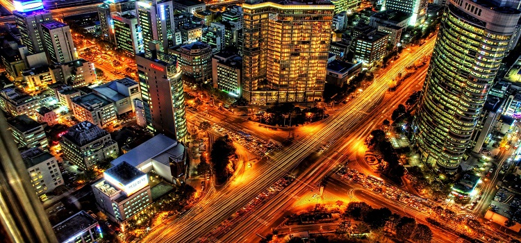
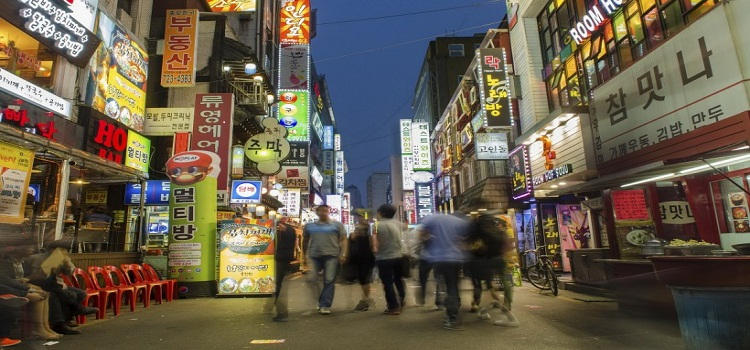
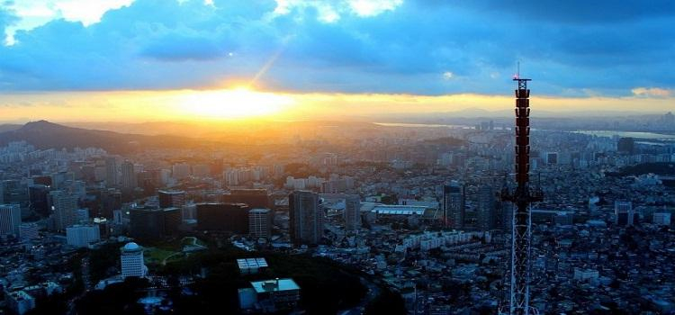

介绍
首尔（谚文：서울；英文：Seoul），全称首尔特别市，旧称汉城。首尔位于韩国西北部的汉江流域，朝鲜半岛的中部。首尔是大韩民国首都，是世界第十大城市、朝鲜半岛最大的城市，亚洲主要金融城市之一；也是韩国的政治、经济、科技、教育、文化中心。

图：首尔夜景
首尔最早为周朝的真番东夷小国的栖居地，1394年朝鲜国王李成桂迁都汉阳并改为汉城。1948年起改称韩语固有词“서울”（首都的意思），成为朝鲜半岛唯一没有汉字名的城市。2005年1月，韩国政府宣布“서울”的中文翻译名称正式更改为“首尔”。

图：首尔街景
#宗教#
在宗教方面，首尔人民主要信奉基督教，天主教，佛教等。
佛教是公元4世纪由中国传入朝鲜半岛的。佛教作为韩国历史悠久的宗教教派，一直对韩国的政治、经济、文化产生着巨大的影响。韩国佛教共有26个宗派，9200多座寺庙和1100多万名信徒，是信徒最多的宗教。公元初期儒教传入朝鲜半岛。千百年来，儒教的伦理道德思想和生活哲学一直影响着韩国。

图：首尔城市景观
#最佳旅游时间#
春秋两季是最佳旅游时节。首尔地处朝鲜半岛，属于温带季风气候，冬天寒冷干燥，夏天炎热潮湿，春天和秋天则舒适晴朗。首尔的春季（尤其是在3月底-4月上旬）樱花盛开，秋季（尤其是在11月）红叶飘飘，景色气候都相宜，是首尔一年中最适宜旅游的季节。

图：首尔城市景观
时差
北京为东八区，韩国首尔用的东九区。首尔比中国快1小时。
公众假期及节庆
#永登浦汝矣島櫻花節#
梦幻般的樱花庆典，昭示着首尔春天的到来。每年4月初到4月中旬樱花盛开之际，在汝矣岛公园及汝矣西路(国会后侧)一带举行春花庆典。举办庆典期间，原产地为韩国济州岛的1641棵大樱花树以及金达莱、连翘、山踯躅、雪柳花、小花溲疏等13种共87859棵花树都将竞相开放，以一眼望不到边的汉江为背景，展开一场春天的盛宴。
专业游行表演团和市民一起进行春花庆典游行，以此为开端，大街上到处开展丰富多彩的文化艺术表演和体验活动，在盛开的樱花中热闹非凡。夜晚因有特殊景观灯照亮满街的樱花，使您陶醉于美丽春夜的浪漫之中。
图：永登浦汝矣島櫻花節
#燃灯节#
5月6日佛诞节来临之际，首尔市中心钟路一带。从奉恩寺举办的传统灯展开始，在钟路的曹溪寺和仁寺洞一带举行伴以丰富多彩的佛敎文化活动。燃灯节的高潮是庆典最后一天傍晚开始的“提灯游行”。
图：燃灯节夜景
#仁寺洞传统文化节#
每年4月底、5月初，在首尔钟路区仁寺洞一带。期间会举办传统婚礼仪式表演、捕盗大将巡游、伽倻琴弹唱、农乐表演、太平舞、教坊舞、民谣演唱等节目。
图：仁寺洞传统文化节街景
#鼓乐节#
每年10月初，在庆熙宫、世宗文化会馆露天舞台等地。 鼓乐节主要在首尔广场、世宗文化会馆露天舞台等地举行，活动内容包括开幕式、闭幕式、演出、展览以及鼓乐演奏、乐器体验活动。
图：鼓乐节
有关韩国的公众假期资讯，欢迎浏览以下的网址：
http://holidays-calendar.net/